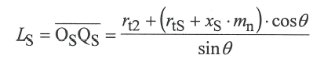
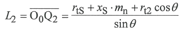

|
|
|


端面齿轮：3D 几何
端面齿轮的 3D 模型是通过模拟切削过程生成的。在此模拟中，螺旋角、轴交角或偏置距没有限制。模型的参考坐标根据 Roth [3] 定义，齿轮和小轮的相应位置由公式 (1) 和 (2) 定义。

(1)
(2)其中 rtS 是小轮参考半径，xS 是小轮齿廓变位系数。切削工序中的 rtS 由插齿刀（刀盘）计算得出。
为定义轴交角和径向偏置距（Σ 和 a），请选择
端面齿轮模型是通过模拟切削过程生成的，齿面被近似为样条曲面。
制造过程基于 Parasolid 核心，模型质量取决于在 Parasolid 建模中所做的设置（见 ）。
注意：
强度计算假定轴交角为90°，径向偏置距为0。轴交角和径向偏置距仅用于3D模型生成，因此强度计算结果可能无效。
Face gear: 3D geometry
The 3D model of a face gear is generated by simulating the cutting process. In this simulation, there are no limitations involving the helix angle, shaft angle or offset. The reference coordinates of the model are defined according to Roth [3], and the corresponding positions of pinion and gear are defined by equations (1) and (2).
(1)
(2)
Where rtS is the pinion reference radius and xS is the pinion profile shift coefficient. rtS in the cutting operation is calculated from the pinion cutter.
To defined the shaft angle and the radial offset (? and a ), select .
The face gear model is generated by simulating the cutting process, and the tooth flank is approximated as a spline surface.
The manufacturing process is based on the Parasolid core, where the quality of the model depends on the settings made in Parasolid modeling (see ).
Note:
The strength calculation is performed with the assumption that the shaft angle is 90° and the radial offset is 0. The shaft angle and radial offset are only used for 3D model generation, so the strength calculation results may not be valid.